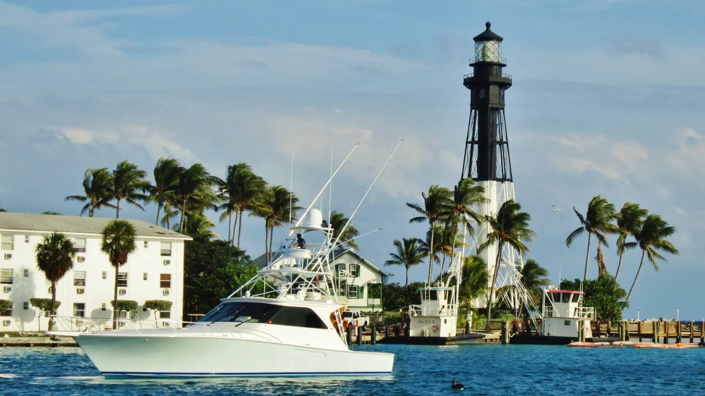

Lighthouse Point homes for sale are mostly single-family houses, many on canals with boat access to the ocean through the Hillsboro Inlet. The Broward County Property Appraiser puts the median single-family value near $1.08 million on the 2026 tax roll, and waterfront homes can go far higher. Royal Star Corp's office is in Deerfield Beach, right next door, so Rui Cunha knows this small boating city well.
What it's like to live in Lighthouse Point
Lighthouse Point is a small city in northeast Broward County. Deerfield Beach is to the north, Hillsboro Beach is across the Intracoastal to the east, and Pompano Beach wraps around the west and south (Wikipedia). Florida's Office of Economic and Demographic Research estimated the population at 10,454 as of April 1, 2025 (Florida EDR).
Boating is the main draw. Most of the city was built on canals dug in the 1950s and 1960s, which created a lot of waterfront housing. Through the Hillsboro Inlet, boats can reach Bimini in the Bahamas, about 40 miles away (Wikipedia).
Types of homes
- Waterfront single-family homes. The heart of the market. Water depth, canal width, distance to the inlet, bridges along the route and the condition of the seawall and dock all affect value.
- Dry-lot single-family homes. Homes off the water, often a lower-cost way into the city.
- Condos. A smaller part of the market. Lighthouse Point has 1,324 condo units on the county tax roll, with a median value of $163,810, far below its houses (BCPA).
Lighthouse Point market snapshot
The Broward County Property Appraiser's 2026 tax roll lists 3,429 single-family homes in Lighthouse Point, with a median market value of $1,078,790 and an average of $1,665,488. The average is much higher than the median because of the large waterfront estates (BCPA). For comparison, the Broward-wide single-family median is $514,200 on the same report. These are appraiser estimates, not sale prices.
Lighthouse Point is small, so monthly sale-price medians jump around based on which few homes happened to close. Prices vary widely by water access, lot and home condition, so ask Rui for a current comparison of recent sales on the canals you're considering.
Practical notes: seawalls, condos, insurance and flood
Seawalls and docks. On a waterfront home, have the seawall, dock and any boat lift inspected before closing. Repairs can be expensive and are the owner's responsibility. Rui is also a licensed General Contractor, which helps when you're weighing repair costs.
Older condos. Buildings of three or more stories need a milestone inspection at 30 years, or 25 if the local building department requires it (SB 154, 2023), plus a Structural Integrity Reserve Study and funded reserves (Rimkus). Ask for the reserve study, budget and assessment history before you offer.
Insurance and flood. A city built on canals carries real flood exposure. FEMA's newer pricing raised flood premiums most in coastal Broward and Palm Beach (WLRN), and Citizens policyholders must carry flood coverage as the requirement phases in through 2027 (News4JAX). Ask for the elevation certificate and get windstorm and flood quotes before you sign.
Property taxes. A primary residence may qualify for Florida's homestead exemption. Ask a CPA how it applies to you.
Schools
Lighthouse Point is served by Broward County Public Schools. Residents are zoned to Norcrest Elementary School in Pompano Beach, and to Deerfield Beach Middle School and Deerfield Beach High School in Deerfield Beach (Wikipedia). Confirm the zoned schools for any address with the district and check grades on the Florida Department of Education site.
Getting around
Lighthouse Point sits between Deerfield Beach and Pompano Beach, so shopping, the beach in Deerfield and Pompano, and I-95 are all close. For boaters, the Hillsboro Inlet is the city's route to the Atlantic. Drive your work commute at rush hour before you commit.
Working with Rui in Lighthouse Point
Rui has been in South Florida real estate since 2003, first as a mortgage broker and later as a broker and licensed General Contractor. He can help you buy a home, explain ITIN mortgages, or price your waterfront home if you want to sell your home. Run numbers with the mortgage calculator, and compare nearby Deerfield Beach and Pompano Beach.
FAQ
How much are homes in Lighthouse Point?
On the Broward County Property Appraiser's 2026 tax roll, the median single-family value is $1,078,790 across 3,429 homes. Sale prices depend heavily on water access, so ask for recent sales on the specific canal.
Does Lighthouse Point have ocean access for boats?
Yes. Most of the city is built on canals, and boats reach the Atlantic through the Hillsboro Inlet. Bimini in the Bahamas is about 40 miles away. Check bridge clearances and water depth for your boat before you buy.
What should I inspect on a waterfront home?
The seawall, dock and boat lift, plus the roof and the elevation certificate for insurance. Seawall repairs can be expensive and are the owner's responsibility.
Can I buy in Lighthouse Point without a Social Security number?
Many buyers use an ITIN mortgage, subject to lender approval. See our ITIN mortgage guide or contact Rui.
Talk to Rui
Looking at Lighthouse Point? Ask Rui for recent sales on the canals and streets you like.